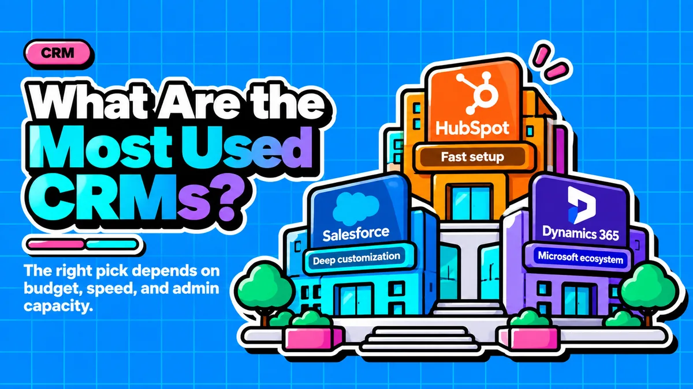

What Are the Most Used CRMs: HubSpot, Salesforce, or Dynamics 365?

Direct answer: The three most used CRMs are Salesforce, HubSpot, and Microsoft Dynamics 365. Salesforce leads enterprise revenue with roughly 21% market share, HubSpot dominates SMB adoption, and Dynamics 365 wins among companies already inside the Microsoft ecosystem. For startups, the right pick depends on budget, admin capacity, and existing tech stack, not brand size.
- Salesforce holds about 20 to 21% of global CRM market share and remains the enterprise revenue leader, but requires dedicated admins and can cost 4 to 10x more than HubSpot in year one.
- HubSpot dominates SMB CRM adoption, with 6sense attributing 62% of SMB CRM installations to it, and deploys in 1 to 4 weeks versus 3 to 6 months for Salesforce or Dynamics 365.
- Microsoft Dynamics 365 holds about 5.2% market share and is the strongest choice for companies already running on Microsoft 365 and Azure, since it integrates natively with Outlook, Teams, and Power BI.
- 55% of CRM implementations fail to meet their planned objectives, and poor user adoption, not software limitations, is the primary cause, which matters more for lean teams than any feature comparison.
- Startups should default to HubSpot's free or Starter tier first, and only move to Salesforce or Dynamics 365 when a specific ecosystem or complexity trigger appears, budgeting for dedicated admin support from day one.
Questions this article answers
- What does the current CRM market landscape look like?
- Why is HubSpot built for speed and simplicity?
- What makes Salesforce the enterprise standard for CRM?
- What is Microsoft Dynamics 365's main advantage as a CRM?
- What actually differs between HubSpot, Salesforce, and Dynamics 365?
- How does CRM choice affect a startup's revenue?
- Which CRM should a resource-constrained startup founder choose?
- Plus 6 FAQs answered below
What does the current CRM market landscape look like?
Salesforce leads worldwide CRM revenue at roughly 20%, followed by Dynamics 365 at 5.2%, while HubSpot dominates SMB adoption despite a smaller global share, and CRM adoption failure remains a widespread problem regardless of platform.
Salesforce took 20.0% of worldwide CRM software revenue in 2025, ranking first for a 13th consecutive year, though its tracked share fell from 23.8% in 2021 to 20.0% in 2025 as Salesforce revenue still grew to $41.5 billion in FY2026, reflecting a faster-growing market rather than shrinking sales.
Meanwhile, HubSpot reported 299,458 paying customers as of March 31, 2026, up 16% from a year earlier, and regularly wins against Dynamics in competitive evaluations among mid-market companies. On the Microsoft side, Dynamics 365 had revenue growth of 23% in FY25 Q4, holding about 5.2% market share.
It's also worth noting that adoption itself is the real challenge: 55% of CRM implementations fail to meet their planned objectives, with poor user adoption, not software limitations, as the primary cause. For a resource-constrained startup, this matters more than any feature comparison.
Why is HubSpot built for speed and simplicity?
HubSpot was designed as an inbound marketing and sales platform, letting founders deploy workflows fast without a RevOps team, though it trades depth of customization for that speed and simplicity.
HubSpot's no-code platform lets you deploy intelligent workflows fast, making it the CRM of choice for mid-market and growing businesses. For a founder without a dedicated RevOps team, this matters enormously: you can sign up and start managing contacts, automating emails, and tracking deals within hours.
On pricing and speed, HubSpot scores 4.4/5 on G2, 4.5/5 on Capterra, 8.6/10 on ease of use, deploys in 1 to 4 weeks, reaches proficiency in under a week, offers 1,800+ marketplace apps, and provides a free CRM for up to 5 users. This free tier is a genuine differentiator for pre-seed and seed-stage founders. HubSpot also offers one of the most extensive integration ecosystems in CRM, with over 1,000 apps in the App Marketplace, including Salesforce, Shopify, Slack, and Zoom, most requiring little to no code.
The tradeoff shows up as companies scale: advanced customization, complex object modeling, and enterprise-grade configurability that Salesforce or Dynamics 365 offer are not available at comparable price points.
What makes Salesforce the enterprise standard for CRM?
Salesforce leads CRM by revenue and offers the deepest customization and ecosystem breadth through Sales Cloud, Service Cloud, Marketing Cloud, and its Agentforce AI architecture, but it demands significant budget and dedicated admin resources.
Salesforce's suite, Sales Cloud, Service Cloud, Marketing Cloud, and Commerce Cloud, uses the Data Cloud to unify customer data, with Agentforce introducing autonomous AI agents for sales and service automation. Salesforce wins on customisation depth and ecosystem breadth, betting on maximum flexibility through its customizable platform and AppExchange ecosystem.
That flexibility carries real cost: Salesforce was built for enterprise-scale sales teams with deep pockets and armies of admins, and even simple field changes can feel like coding without certified admins. For a lean startup, pricing starts at a few dozen dollars per user but can hit four figures monthly for a 5-person team, and one benchmark found Salesforce can cost 4 to 10x more than HubSpot in year one once admin and implementation costs are factored in. Implementation also takes 3 to 6 months to deploy and 2 to 4 weeks to reach proficiency.
What is Microsoft Dynamics 365's main advantage as a CRM?
Dynamics 365's primary strength is native integration with Outlook, Teams, Azure, and Power BI, making it the strongest option for companies already committed to the Microsoft ecosystem, though it is more complex to implement than HubSpot.
Dynamics 365's primary advantage is deep integration with the Microsoft ecosystem, and it is strongest in large enterprises already committed to Microsoft infrastructure. It bets on native Microsoft ecosystem integration, combining CRM and ERP capabilities in a single platform that talks to Teams, Outlook, Power BI, and Azure without stitching required.
However, Dynamics 365 is widely considered more complex to implement and customise than HubSpot, and lacks HubSpot's integrated marketing automation capabilities. Founders evaluating it firsthand note the interface can be overwhelming for first-time users. Pricing is modular, paying per app such as Sales, Marketing, or Customer Service, which can complicate budgeting. On usability, it scores 3.8/5 on G2, 4.4/5 on Capterra, 7.5/10 on ease of use, requires 3 to 6 months to deploy, 2 to 6 weeks to proficiency, has no free CRM tier, and offers 4,000+ marketplace apps.
What actually differs between HubSpot, Salesforce, and Dynamics 365?
The three differ mainly on cost of ownership, time to value, and depth of customization, with HubSpot winning on speed and ease of administration, Salesforce on customization depth, and Dynamics 365 on Microsoft ecosystem synergy.
On cost, Dynamics 365 offers moderate total cost of ownership, often reduced for Microsoft ecosystem users through licensing overlaps, while Salesforce typically has the highest TCO, driven by per-user costs, add-ons, and dedicated admin requirements.
On headline pricing, the gap has narrowed at the enterprise tier: Salesforce Sales Cloud Enterprise lists at $165 per user per month, Microsoft Dynamics 365 Sales Enterprise at $105, and HubSpot Sales Hub Enterprise at $150 in 2026, with all three reaching $200 to $500 per user once AI, automation, and analytics add-ons are bundled. This means the real differentiator for startups is not sticker price but hidden implementation and admin costs.
How does CRM choice affect a startup's revenue?
Choosing the wrong CRM, or failing to drive adoption of the right one, throttles revenue growth by degrading pipeline visibility, slowing lead response, and fragmenting customer data that GTM teams rely on.
This is not a theoretical risk: 55% of CRM implementations fail to meet their planned objectives, with poor user adoption, not software limitations, as the primary cause. A startup that overbuilds on Salesforce or Dynamics 365 before it has the operational maturity to support them risks burning runway on a system its own team will not use. Conversely, a startup that underinvests in CRM discipline altogether risks losing deals to slower follow-up, inconsistent handoffs between marketing and sales, and an inability to forecast revenue accurately for investors.
Which CRM should a resource-constrained startup founder choose?
Founders should default to HubSpot's free or Starter tier to establish CRM discipline within days, and only upgrade to Salesforce or Dynamics 365 when a documented ecosystem or complexity trigger emerges, budgeting for admin support from day one.
Startup founders with limited resources should default to HubSpot's free or Starter tier to establish CRM discipline and marketing-sales alignment within days, not months, given HubSpot deploys in 1 to 4 weeks, reaches proficiency in under a week, and offers a free CRM for up to 5 users.
Reassess only when a documented, ecosystem-specific trigger emerges: heavy dependence on Microsoft 365 and Azure infrastructure favors Dynamics 365, while a genuine need for deep, multi-cloud customization tied to enterprise-grade sales complexity favors Salesforce. In both upgrade scenarios, budget explicitly for a dedicated admin or implementation partner from day one, since under-resourcing the human side of CRM administration, not the software choice itself, is what causes most implementations to fail.
Frequently asked questions
What are the three most used CRM platforms?
Salesforce, HubSpot, and Microsoft Dynamics 365 are the three most used CRM platforms, with Salesforce leading enterprise revenue at about 20 to 21% market share, HubSpot dominating SMB adoption, and Dynamics 365 holding about 5.2% share tied to the Microsoft ecosystem.
Which CRM is best for a small startup with limited budget?
HubSpot is generally best for resource-constrained startups because it offers a free CRM tier for up to 5 users, deploys in 1 to 4 weeks, and reaches proficiency in under a week, compared to 3 to 6 months for Salesforce or Dynamics 365.
Why is Salesforce more expensive than HubSpot?
Salesforce can cost 4 to 10x more than HubSpot in year one because it typically requires certified admins, longer implementation periods of 3 to 6 months, and extensive add-ons, whereas HubSpot deploys quickly with minimal technical overhead.
When does Microsoft Dynamics 365 make sense for a startup?
Dynamics 365 makes sense primarily when a startup's operations, finance, and productivity tools already run on Microsoft 365 and Azure, since the CRM becomes an extension of existing infrastructure rather than a new standalone system to learn.
Why do most CRM implementations fail?
55% of CRM implementations fail to meet their planned objectives, and the primary cause is poor user adoption rather than software limitations, meaning the CRM a team actually uses consistently outperforms a more powerful but poorly adopted platform.
How does CRM pricing compare at the enterprise tier?
At the enterprise tier, Salesforce Sales Cloud Enterprise lists at $165 per user per month, HubSpot Sales Hub Enterprise at $150, and Microsoft Dynamics 365 Sales Enterprise at $105, though all three can reach $200 to $500 per user once AI and automation add-ons are included.
Sources
- Resonate HQ: HubSpot Market Share
- Wave CNCT: CRM Statistics
- SellersCommerce: CRM Statistics
- Command Linux: CRM Market Share Statistics
- 6sense: Microsoft Dynamics 365 CRM Market Share
- Axis Intelligence: CRM Statistics
- 6sense: HubSpot CRM Market Share
- Analysis Atlas: CRM Software Market Landscape
- Webby Crown: CRM Market Share
- SyncMatters: HubSpot vs Microsoft Dynamics Comparison
- Sybill: Salesforce vs HubSpot vs Dynamics 365
- Youssef Kassab: HubSpot vs Microsoft Dynamics 365 vs Salesforce
- Baked With: HubSpot vs Salesforce vs Microsoft Dynamics
- Revio Agency: HubSpot vs Salesforce Dynamics Zoho CRM Comparison
- Atonement Licensing: CRM Comparison Salesforce vs Dynamics vs HubSpot
- Vendor Benchmark: Salesforce vs HubSpot vs Dynamics Pricing Benchmark
- Grokipedia: Comparison of Salesforce, Microsoft Dynamics 365, and HubSpot
Not sure which CRM actually fits your stack, budget, and admin capacity?
Contact →